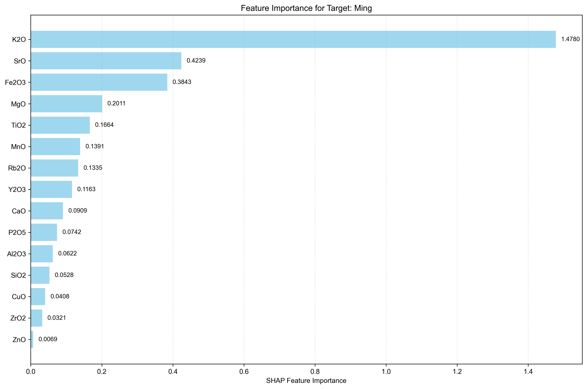
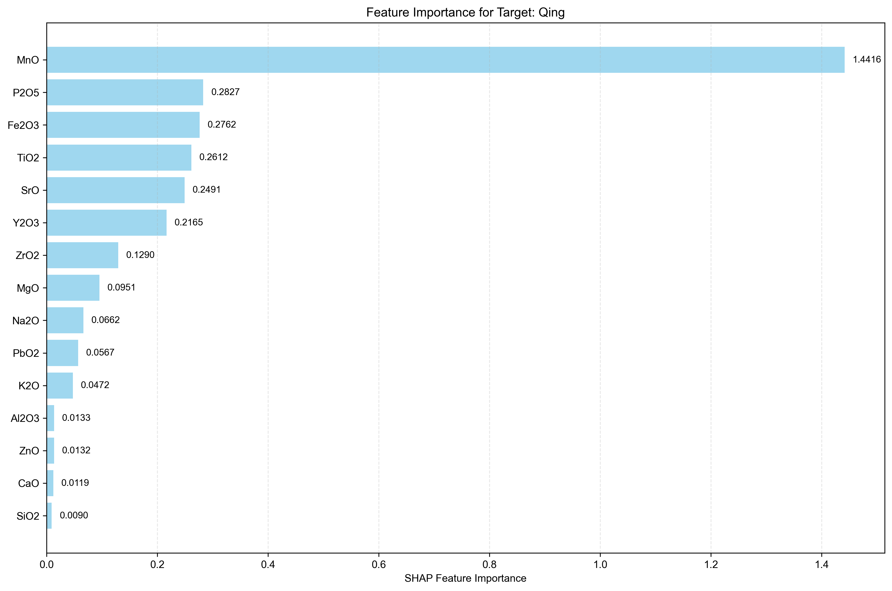
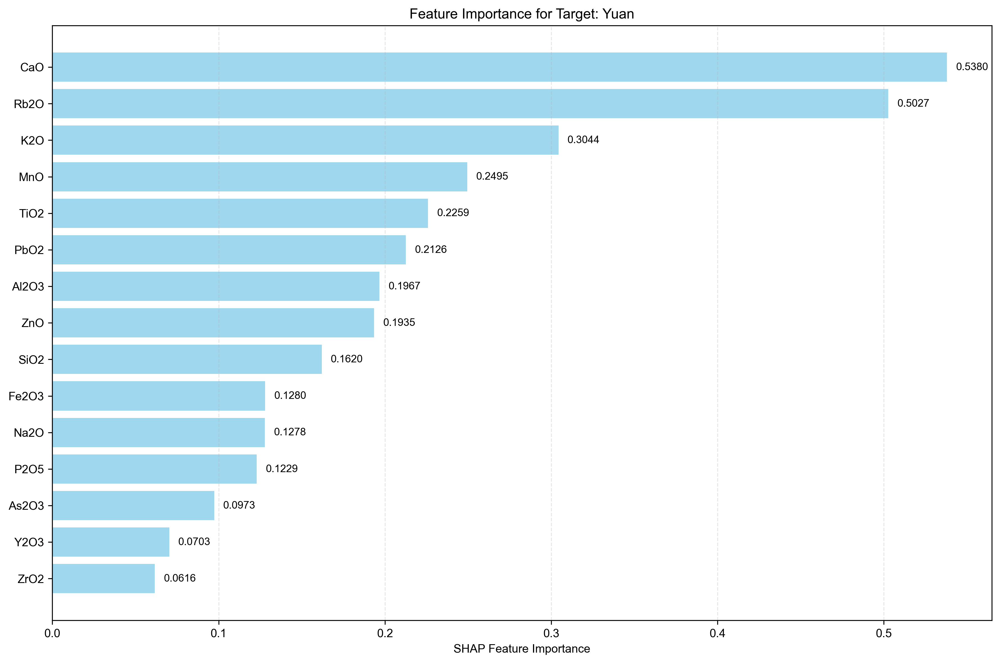

Analysis Method: SHAP
Number of Targets: 3
Generated on:
Targets Analyzed: Ming, Qing, Yuan
| Rank | Feature Name | SHAP Importance | Relative Importance (%) |
|---|---|---|---|
| 1 | K2O | 1.4780 | 43.36% |
| 2 | SrO | 0.4239 | 12.44% |
| 3 | Fe2O3 | 0.3843 | 11.27% |
| 4 | MgO | 0.2011 | 5.90% |
| 5 | TiO2 | 0.1664 | 4.88% |
| 6 | MnO | 0.1391 | 4.08% |
| 7 | Rb2O | 0.1335 | 3.92% |
| 8 | Y2O3 | 0.1163 | 3.41% |
| 9 | CaO | 0.0909 | 2.67% |
| 10 | P2O5 | 0.0742 | 2.18% |
| 11 | Al2O3 | 0.0622 | 1.82% |
| 12 | SiO2 | 0.0528 | 1.55% |
| 13 | CuO | 0.0408 | 1.20% |
| 14 | ZrO2 | 0.0321 | 0.94% |
| 15 | ZnO | 0.0069 | 0.20% |
| 16 | Na2O | 0.0063 | 0.18% |
| 17 | As2O3 | 0.0000 | 0.00% |
| 18 | PbO2 | 0.0000 | 0.00% |

| Rank | Feature Name | SHAP Importance | Relative Importance (%) |
|---|---|---|---|
| 1 | MnO | 1.4416 | 45.40% |
| 2 | P2O5 | 0.2827 | 8.90% |
| 3 | Fe2O3 | 0.2762 | 8.70% |
| 4 | TiO2 | 0.2612 | 8.23% |
| 5 | SrO | 0.2491 | 7.85% |
| 6 | Y2O3 | 0.2165 | 6.82% |
| 7 | ZrO2 | 0.1290 | 4.06% |
| 8 | MgO | 0.0951 | 3.00% |
| 9 | Na2O | 0.0662 | 2.09% |
| 10 | PbO2 | 0.0567 | 1.79% |
| 11 | K2O | 0.0472 | 1.49% |
| 12 | Al2O3 | 0.0133 | 0.42% |
| 13 | ZnO | 0.0132 | 0.42% |
| 14 | CaO | 0.0119 | 0.37% |
| 15 | SiO2 | 0.0090 | 0.28% |
| 16 | Rb2O | 0.0052 | 0.16% |
| 17 | CuO | 0.0009 | 0.03% |
| 18 | As2O3 | 0.0000 | 0.00% |

| Rank | Feature Name | SHAP Importance | Relative Importance (%) |
|---|---|---|---|
| 1 | CaO | 0.5380 | 16.34% |
| 2 | Rb2O | 0.5027 | 15.27% |
| 3 | K2O | 0.3044 | 9.24% |
| 4 | MnO | 0.2495 | 7.58% |
| 5 | TiO2 | 0.2259 | 6.86% |
| 6 | PbO2 | 0.2126 | 6.46% |
| 7 | Al2O3 | 0.1967 | 5.97% |
| 8 | ZnO | 0.1935 | 5.88% |
| 9 | SiO2 | 0.1620 | 4.92% |
| 10 | Fe2O3 | 0.1280 | 3.89% |
| 11 | Na2O | 0.1278 | 3.88% |
| 12 | P2O5 | 0.1229 | 3.73% |
| 13 | As2O3 | 0.0973 | 2.96% |
| 14 | Y2O3 | 0.0703 | 2.14% |
| 15 | ZrO2 | 0.0616 | 1.87% |
| 16 | SrO | 0.0493 | 1.50% |
| 17 | MgO | 0.0418 | 1.27% |
| 18 | CuO | 0.0083 | 0.25% |

• This report shows feature importance analysis for multi-target regression using SHAP method.
• Higher importance values indicate features that have more influence on the target prediction.
• Rankings are calculated independently for each target.
• Relative importance percentages show each feature's contribution relative to all features for that target.